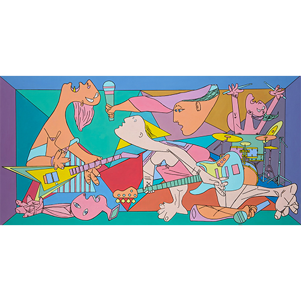
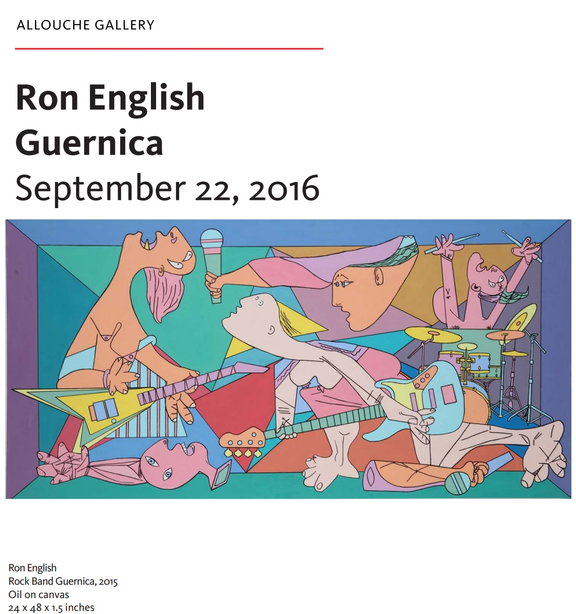
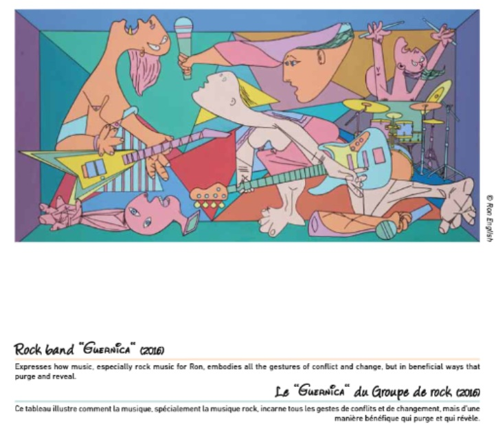

Exhibitions
Ron English / Guernica, Allouche Gallery, New York, New York, US, September 22–October 19, 2016.
Reimagining “Guernica” / La réinvention du “Guernica”, Museo de la Paz de Gernika, Gernika-Lumo, Bizkaia, Spain, April 4–December 10, 2017; the composition was presented as a print on stretched canvas, not as the original painting.
Literature
Allouche Gallery, Ron English: Guernica (New York: Allouche Gallery, 2016), online exhibition catalogue PDF, available here, accessed April 5, 2026.
Museo de la Paz de Gernika, Ron English: Reimagining “Guernica” / La réinvention du “Guernica” (Gernika-Lumo: Museo de la Paz de Gernika, 2017), digital exhibition catalogue / flip-book, available here, accessed April 5, 2026.
Notes
The composition references Pablo Picasso’s Guernica.
Ancillary Documentation
The following materials document the reference model, art-historical source image, exhibition catalogues, and related exhibition documentation.




Selected Online Circulation
Selected examples of the work’s online circulation, reproduction, or discussion. This list is not exhaustive; it is intended to document representative appearances of the image beyond formal exhibition and publication records.